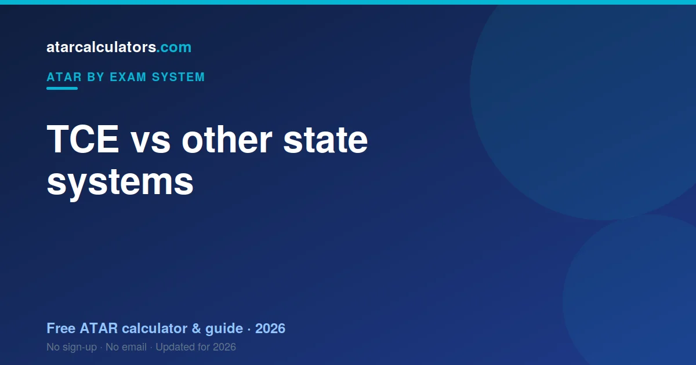

The TCE is not inherently easier or harder than other state systems. The ATAR is a national rank, so a given ATAR means the same thing everywhere. Differences in state medians mostly reflect participation rates, not difficulty. Each system assesses students differently, but all produce the same national ATAR.
Key takeaways
- The TCE is not inherently easier or harder than other systems.
- The ATAR is a national rank — a given ATAR means the same everywhere.
- State median differences mostly reflect participation, not difficulty.
- Each system assesses differently, but all produce the same ATAR.
- Scaling equalises subjects within each state.
- You cannot get an easier ATAR by moving states.

The ATAR is national
The ATAR is one national rank. An 85.00 from Tasmania carries exactly the meaning an 85.00 carries anywhere else: you finished ahead of roughly 85% of your state's Year 12 age group.
Mainland universities read a Tasmanian ATAR without conversion or discount. The rank is already on a common scale.
How the systems differ
The rank is shared; the machinery is not. Tasmania adds your best five scaled scores in full to build a Tertiary Entrance Score out of 75. Victoria works to about 210, New South Wales and Queensland to 500.
Those totals are not comparable, and comparing them is the fastest way to a wrong conclusion. A TES of 60 out of 75 is not "worse" than an aggregate of 400 out of 500 — they are different rulers.
What is unique about the TCE
In Tasmania, only Level 3 and Level 4 pre-tertiary subjects count towards your ATAR. Lower-level subjects build your TCE but do not feed your rank at all — a distinction sharper than in most states.
The University of Tasmania is the state's university, and your best five scaled pre-tertiary results form the Tertiary Entrance Score behind your ATAR. Five scores, counted in full, with nothing tapered.
Why state medians differ
State medians move with participation, not standards. Where a larger share of students receives an ATAR, the median falls; where fewer do, it rises.
Tasmania's figures describe Tasmania's cohort. They are not a scoreboard against the mainland, and they carry no information about how demanding any subject is.
Is any state easier?
No. Your ATAR ranks you against your own state's cohort, so no state can be easier in the sense the question implies. An easier path would need a weaker cohort, not gentler subjects.
Tasmania's smaller cohort changes the arithmetic's texture, not its difficulty. You are still competing for position within the group you sat with.
How scaling fits in
Every state scales in order to make different subjects comparable before ranking. TASC does it for Tasmania.
The calculation runs entirely within Tasmania's own cohorts, which is why a Tasmanian scaled score cannot be meaningfully lined up against a Victorian one. Different reference group, different calibration.
Does moving states help your ATAR?
No. Changing states changes the rules and the cohort; it does not gift you a rank.
It also costs you. Tasmania's Level 3 and 4 structure does not map neatly onto other states' certificates, so a mid-course move risks subjects that no longer count where you are going.
Interstate students and the ATAR
A Tasmanian ATAR is read at face value everywhere. Mainland universities do not adjust it for the state it came from.
Course prerequisites and adjustment schemes are set by each university, so those are the things worth checking — not whether your ATAR "travels".
What to focus on instead
Focus on ranking as high as you can in five pre-tertiary subjects. Since Tasmania counts five scores in full, every one of them contributes completely, and there are no increments to chase.
Confirming that your subjects are Level 3 or 4 is worth more than any amount of cross-state comparison.
The bottom line
The TCE reaches the national rank through five pre-tertiary scores and a TES out of 75. The scale is smaller and the subject levels matter more than elsewhere. Neither fact makes Tasmania easier or harder — it makes it different.
Estimate your ATAR
Wherever you study, you can estimate your ATAR. Our TCE ATAR calculator uses scaling to estimate your ATAR from your results.
Compare your estimate with the cutoff for your course, and you have a clear target. See what a good ATAR is nationally for context.
A closer look at each system
Every state assembles its certificate differently. Tasmania uses your best five scaled pre-tertiary results, totalling to 75. New South Wales counts ten units to 500. Victoria takes four studies plus increments. South Australia counts three and a half. Western Australia takes four and adds bonuses.
Different arithmetic in every case, and the same national rank at the end of all of them.
The myth of the easy state
The easy-state myth persists because nobody tests it. It falls apart immediately: your ATAR ranks you within your own state's cohort, and scaling has already levelled subjects inside that state.
For Tasmania to be "easier", Tasmanian students would have to be weaker than mainlanders. That is not a claim about the certificate at all.
What actually varies between states
What varies is the lived experience. Tasmania draws a hard line at Level 3 and 4 for ATAR purposes, works to a smaller TES, and has a single state university in UTAS.
Those shape your two years genuinely. None of them shapes fairness.
What to take away
Comparing states is entertaining and useless. The TCE reaches the national rank through five pre-tertiary scores and a TES out of 75. A smaller ruler measuring the same distance.
Focus on your own rank
Since no state gives out easier ATARs, the only question worth your time is how you rank inside your five pre-tertiary subjects. That is the whole game in Tasmania.
Common questions
Is the TCE harder than the HSC or VCE?
Neither is inherently harder. The ATAR is a national rank, so a given ATAR means the same across states. The systems assess students differently, but all produce the same national ATAR.
Are ATARs comparable across states?
Yes. The ATAR is a national rank on the same 0.00 to 99.95 scale, so a 90 means the same thing wherever you study. That is the whole point of a national rank.
Does one state give higher ATARs?
No state hands out easier ATARs. Within each state, scaling equalises subjects and the ATAR ranks students against their age group, so a given ATAR represents the same percentile everywhere.
Why do state medians differ?
Mostly because of participation rates. In some states a larger share of students receive an ATAR, while in others more take vocational paths, which shifts the median of those who do get one.